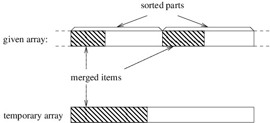

The more complicated step in merge sort is merging the two sorted parts into one. While it is possible to do this without using another array (or other data structure), doing so is quite complicated. Merge sort takes a much simpler approach that uses a temporary array whose size is the sum of the sizes of the two sorted parts combined. It first accumulates the data items into the new array in sorted order, then copies them back into the original array.
In order to understand how the merging works, let's consider a snapshot of an arbitrary step of the algorithm. If we've accumulated an initial portion of the result, these elements will be the smallest ones. Because both of the parts we are merging are sorted, these smallest elements must come from initial portions of these two parts, as shown below.
Initially, the three shaded areas above are all empty. In order to proceed, we need local variables to keep track of the first index in each of the three unshaded areas. We then iterate as long as both of the unshaded areas are nonempty. On each iteration, we want to place the next element into the temporary array. This element needs to be the smallest of the unmerged elements. Because both parts of the given array are sorted, the smallest unmerged element will be the first element from one of the two unshaded parts of this array - whichever one is smaller (for stability, we use the first if they are equal). We copy that element to the beginning of the unshaded portion of the temporary array, then update the local variables to reflect that we have another merged item.The above loop will terminate as soon as we have merged all the data items from one of the two sorted parts; however, the other sorted part will still contain unmerged items. To finish merging to the temporary array, we just need to copy the remaining items to the temporary array. We can do this by first copying all remaining items from the first sorted part, then copying all remaining items from the second sorted part (one of these two copies will copy nothing because there will be no remaining items in one of the two sorted parts). Once all items have been merged into the temporary array, we copy all items back to the original array to complete the merge.
We won't do a running time analysis here, but merge sort runs in O(n lg n) time in the worst case. Furthermore, unlike heap sort, it is stable. Because it tends to perform better in practice than tree sort, it is a better choice when we need a stable sorting algorithm. In fact, it is the basis (along with insertion sort) of a stable hybrid sorting algorithm that performs very well in practice. This algorithm, called Tim sort, is rather complicated; hence, we won't describe it here. If we don't need a stable sorting algorithm, though, there are other alternatives, as we shall see in the next two sections.Another scenario in which a merge sort is appropriate occurs when we have a huge data set that will not fit into an array. In order to sort such a data set, we need to keep most of the data in files while keeping a relatively small amount within internal data structures at any given time. Because merging processes data items sequentially, it works well with files. There are several variations on how we might do this, but the basic algorithm is called external merge sort.
External merge sort uses four temporary files in addition to an input file and an output file. Each of these files will alternate between being used for input and being used for output. Furthermore, at any given time, one of the two files being used for input will be designated as the first input file, and the other will designated as the second input file. Similarly, at any given time, one of the two files being used for output will be designated as the current output file, and the other will be designated as the alternate output file.The algorithm begins with an initialization step that uses the given unsorted data file as its input, and two of the temporary files as its output. We will need two variables storing references to the current output file and the alternate output file, respectively. At this point we begin a loop that iterates until we reach the end of the input. Each iteration of this loop does the following:

The loop described above finishes when the second input file is empty. Because the first input file will have no more than one more sorted sequence than the second input file, at the conclusion of the loop, it will contain a single sorted sequence followed by an end marker. The algorithm therefore concludes by copying the data from this file, minus the end marker, to the output file.
Let's now consider more carefully the merge done in step 1a above. This merge is done in essentially the same way that the merge is done in the original merge sort; however, we don't need to read in the entire sorted sequences to do it. Instead, all we need is the next item from each sequence. At each step, we write the smaller of the two, then read the next item from the appropriate input file. Because we only need these two data items at any time, this merge can handle arbitrarily long sequences.For an external sorting algorithm, the most important measure of performance is the number of file I/O operations it requires, as these operations are often much more expensive than any other (depending, of course, on the storage medium). Suppose the initial input file has n data items, and suppose the array we use in the initialization step can hold m data items. Then the number of sorted sequences written by the initialization is n/m, with any fractional part rounded up. Each iteration of the main loop then reduces the number of sorted sequences by half, with any fractional part again rounded up. The total number of iterations of the main loop is therefore lg (n/m), rounding upward again. Each iteration of this loop makes one pass through the entire data set. In addition, the initialization makes one pass, and the final copying makes one pass. The total number of passes through the data is therefore lg (n/m) + 2. For example, if we are sorting 10 billion data items using an array of size 1 million, we need lg 10,000 + 2 passes, rounded up; i.e., we need 16 passes through the data.
Various improvements can be made to reduce the number of passes through the data. For example, we can avoid the final file copy if we use another mechanism for denoting the end of a sorted sequence. One alternative is to keep track of the length of each sequence in each file in a List<long>. If the temporary files are within the same directory as the output file, we can finish the sort by simply renaming the first input file, rather than copying it.A more substantial improvement involves using more temporary files. k-way external merge sort uses k input and k output files. Each merge then merges k sorted sequences into 1. This reduces the number of iterations of the main loop to logk (n/m). Using the fact that logk2 n = (logk n)/2, we can conclude that squaring k will reduce the number of passes through the data by about half. Thus, 4-way external merge sort will make about half as many passes through the data as 2-way external merge sort. The gain diminishes quickly after that, however, as we must increase k to 16 to cut the number of passes in half again.